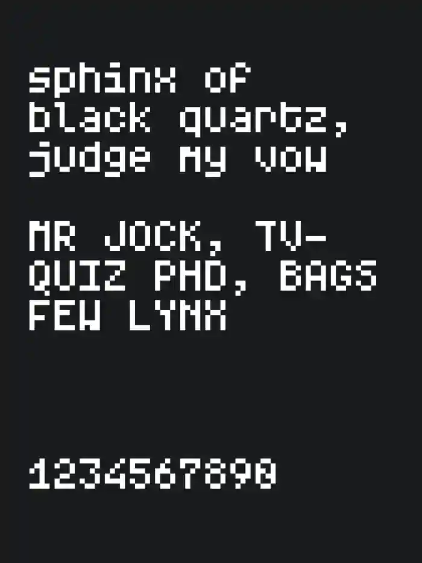
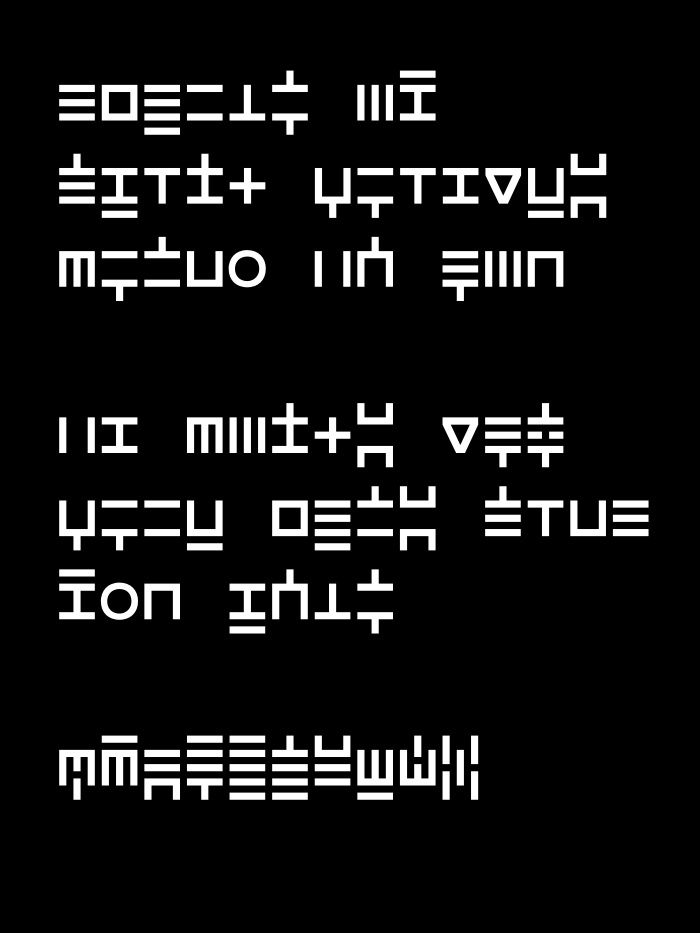
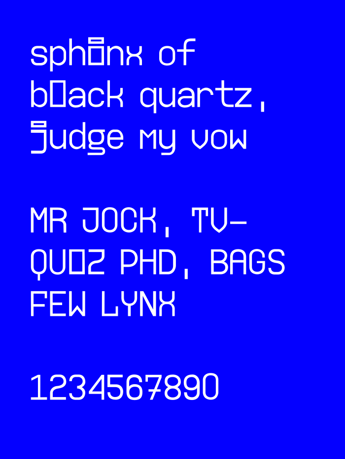

There's not much here yet, but I make stuff all the time and if I like it I might put in on this page!
Interactives
These are Javascript based interactive things I've made. I don't really know JS so these are pretty cobbled together, and only the ambigenerator works on mobile.
Ambigram Generator - The thing that I think made my website pretty popular on google search.
Morse Keyer - A keyer for morse code that only works on desktop, but it's pretty good!
toki pona to Unicode - It's just a converter to sitelen pona Unicode, both UCSUR and approximations.
Fonts
Here are a few small fonts I've made in a web app called fontstruct. It's not a good way to make fonts in my opinion, but it is fun to play around with. You can download any of the fonts if you click the name!
Arcade Neue: This is what I would've done with the 8x8 tiles available to NES-developers.
Five High: What if the a-/descenders were one pixel each?
Unnamed Mono: I wanted to experiment with Fontstruct's fun shapes.

Jetbrainsish: A 7x4 font (not nade in Fontstruct I don't think) loosely based on Jetbrains Mono.

Morse Glyphs: If you read letters top to bottom and | = dah and - = dit, every letter (except e and t ignore those) is just morse code!

Ijklmono: I was thinking that a mono font might be cool if the i and l were just really girthy.
Here is a wacky variant I made of Jetbrains Mono, where each letter is as silly as possible to maximize character differentiation. And lastly, this one is what I currently use to code, with Jetbrains Mono on the right. They're identical, except for the i, l, w, W and m, which have all been adjusted to not be monospaced. It makes it read nicer to me, and the overall density of text isn't thrown off by the otherwise very tight lowercase m.
I have but dabbled in music composition and production, as in I've sometimes tried putting down notes over chords until I like it. I've made some pretty uninteresting background tracks for small games I've made, but a while ago I made this chiptune (specifically 2A03) song that's over 3 minutes. It is however quite repetitive, which explains the length. Either way I'm very proud of it because I think it's a banger.
I would love to make more bops, and I will of course put them here in that case.
This site
Here is a timeline of what's happening on this website:
10 May 2023: Finished the first version of the ambigram generator. It is made in ios shortcuts and looks horrendous.
11 May 2023: The ambigenerator is reprogrammed in python using Pillow. It's very slow and hosted on replit.
24 October 2023: The third version of the generator includes several options per word, and it uses the glyphs marked as alternate in the current one!
27 October 2023: Made a website unrelated to the ambigenerator, but it only had one page and a sentence of text.
End of 2023: I learned html and css. Literally after I made the website because then I just guessed.
23 January 2024: It's now remade in Javascript and hosted on the second page of the old website!
8 February 2024: I finished drawing the new vector glyphs that are still in the generator today!
19 March 2024: The morse keyer was added to my website, making it three pages big!
9 January 2025: After exploring some webrings I realized I should make a better website, and I started working on this one.
13 January 2025: Added the morse code keyer and ambigram generator, as well as writing an entire essay as the home page.
16 January 2025: Finished the new website and published it on the same github domain as the old one!
11 February 2025: I added a things I've made and a stuff I like page, as well as changing some fonts and adding something one might call a blog.